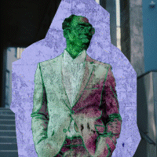
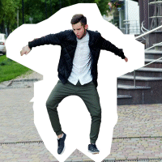
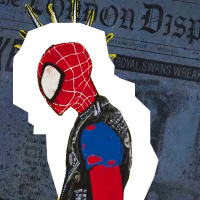
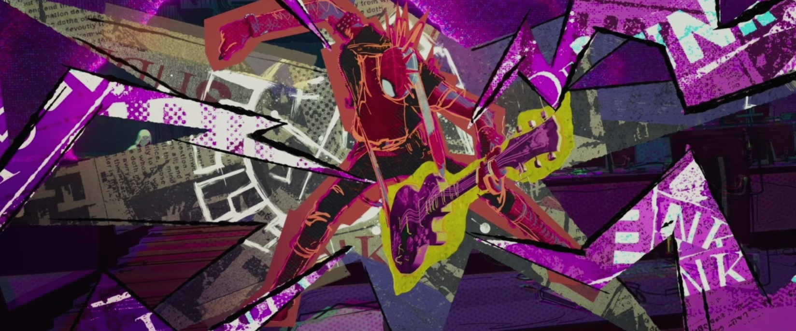
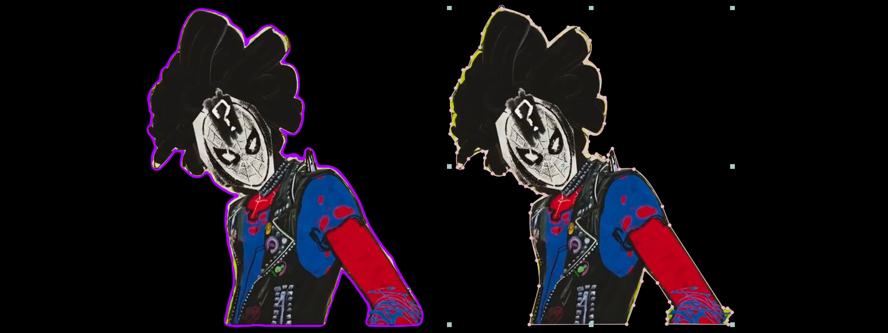
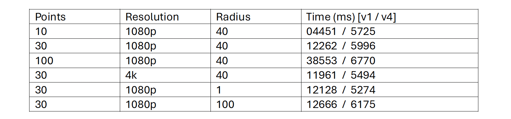

Spider-Verse: Beyond the Spider-Shaders
Stylistic NPR Shaders for Everyday Video.



Background
The Spiderverse series is ubiquitous in both the computer graphics and entertainment industry for sparking interest in non-photorealistic rendering. Yet the common question a lot of creators ask is “how can I capture the Spiderverse effect in my animations” or “how can I make my live-action video look like Spiderverse”. In this paper, we aim to write a set of shaders, known as ‘SpiderShaders’ for which draw inspiration from the SpiderVerse style that any artist or videographer can use on their animation or footage. Specifically, this paper investigates three specific effects: motion blur, RGB glitch, and paper expand.
Since we aim to create shaders that can be applied to any video footage, whether animation or real-life, we limit our inputs to just the 2D video footage. While many of the original Spiderverse effects were done in 3D, we cannot assume every editor has time to construct an accurate depth map of their footage, so our shader aims to be as accurate as possible while limited to 2D. Additionally, the motion blur effect also requires the optical flow map, which most video editing software can compute nowadays via sparse/dense tracking. We will not be writing an optical flow compute node in our work, but will rather be using footage found online with relevant optical flow data. The outputs will be a stylized 2D footage result depending on the shader used.
Our constraints are that our shaders must run on conventional laptop hardware. We demonstrate that most of our shaders can run as After Effects plug-ins and scripts, ensuring that devices that meet the minimum hardware requirements of After Effects can run our filters without substantial time or compute resources. We do not provide a specific performance goal, but rather aim to minimize the compute time as much as possible. As we will discuss later in the paper, one key way of doing so is keeping memory accesses to a minimum, as most of our shaders are memory-bound.
Our goal is to be able to faithfully reconstruct many of the Spiderverse filters in a performant way that can be operated on lower-dimensional 2D footage without substantial loss of quality. The hard part of this project is in how open-ended it is. Because there is no benchmark or testing suite, we have to create our own metric of how well we did. The details of this metric will be presented below.
Approach [Paper Expand]

Fig 1. Introduction of Hobbes | Across the Spiderverse (2023)
The paper expand effect, in its most basic form, is a course-resolution (few points) expand filter around the edges used to give a punk-rock style in SpiderVerse (Fig 1). The input to this filter is a video of a masked object, which can be provided in one of two ways: as a mask (vector) or as a rotoscope (raster) (Fig 2).

Fig 2. Rotoscope [Left] and Mask [Right] | Across the Spiderverse (2023)
A mask is a lot more trivial to work with: sample a random (ideally sparse) set of points along the mask, extrude them via normal approximation of neighboring points, and create a shape layer from the resulting points. Yet most videographers do not use masks for video because masks track and adapt very poorly to non-rigid deformations such as head and body turns. We instead focus on rotoscoped footage for this filter.
pts = init(); // Walk comp bbox, evenly create N points
for(f=0; f<nFrames; f++) {
// Subdivide consecutive points that are far
// Simplify (merge) consecutive points that are too close
remesh(pts);
// While point in raster, take a step backwards
step_back(pts);
// While point not in raster, take a step forward
// On termination, revert a step
step_forward(pts);
// Construct a keyframed shape object out of the points
generate(pts);
}
Alg 1. Paper Cutout Loop
Our algorithm consists of an initialization step followed by 4 steps repeated per frame. During our remeshing operation, we subdivide and simplify points if they are greater or less than a constant proportional to the composition area. When the algorithm steps forward or backwards, the step size is also relative to the composition area so that different resolutions terminate in approximately the same steps. Stepping forward uses a decaying step size.
We implement the filter via After Effect’s scripting language JSX (javascript expressions). Our filter requires periodic lookups into the raster mask, but because JSX does not have any way to access layer pixels, we instead create a text later and schedule a pixel lookup via the layer expression’s built in sampleImage function, reporting the value back as a text value that can be read in by JSX.
JSX cannot be linked with other libraries or frameworks, so we were unable to try any loop-level parallelism.
Experiments [Paper Expand]
We parameterize the filter with the following values:
- Points: number of points. Can change with remeshing step
- Iterations: number of iterations Step Forward
- Frameskip: paper effect is recomputed every x frames
- Radius: the 'thickness' of the paper around the subject
Script v4 introduces the remeshing step as well as point re-use between frames, while script v1 initializes and optimizes a new point list each iteration. In benchmarking performance (Tab 1), we find that increasing the number of points does not affect v4 as much, mainly due to point re-use. Increasing the resolution also does not affect performance for both scripts since step sizes are proportional to composition area. Interestingly enough, changing the radius does not affect performance much for both scripts. This is because the sampleImage function used to access memory supports a radius parameter, so we can still execute calls to our paper extend effect with different radius parameters and still make the same number of calls to sampleImage. Calling sampleImage with a radius of 1 or a radius of 100 does not make much of a performance difference to After Effects, and it shows in our results.

Tab 1. Performance of paper cutout averaged over 5 trials

Res 1. Hobbes With paper overlay #1 | Across the Spiderverse (2023)

Res 2. Hobbes With paper overlay #1 | Across the Spiderverse (2023)
We ran our effect on several pieces of footage, two from Spiderverse (Res 1. & 2.) and two live-action (Res 3. & 4.). We rotoscoped the object of interest in After Effects and ran the v4 script. In most cases, we found that reducing the framerate to 12fps (animating on 2s) produced more interesting stylized results.

Res 3. Full-body rapid movement subjects
For (Res 4.) we experimented with how the paper extend effect can be used in the VFX pipeline. By combining it with color-burn grunge textures, hue offsets, and exaggerated edge filters all confined to the paper bounds, we are able to create even more stylistic effects on real-life footage that better replicate the SpiderVerse NPR effect.

Res 4. Paper expand [Left] and full composite [Right]
Approach [Frame Smearing]

Fig 1. Frame Smearing Example | Across the Spiderverse (2023)
The frame smearing script aims to create an artistic "smearing" effect which interpolates consecutive frames of movement and creates more movement in the composition. This is better illustrated in the example taken from Spiderverse. There are multiple approaches to achieve this.
For one, the shader would need to keep track of the key features that are moving across frames by employing optical flow.
Approach [Dithering]
Fig 1. Introduction of Hobbes | Across the Spiderverse (2023)
The dithering script is a relatively simple script which uses a set Bayer matrix for each frame and off-colors the edges of a pixel region (currently each 3x3 pixel square in a frame) to create the appearance of a dithering pattern. This process is memoryless and does not use previous frames to inform current frames. The severity of the coloring can be increased or decreased by modifying an nlevels variable which essentially alters the number of colors available for that region's pallete, moving pixel colorations to the nearest available option. At a high nlevels value, the produced frames of the video becomes visually identical to the original, while low nlevel values produce more distinguishablly differentiated dithering regions.
Responsibilities
Oscar Dadfar (odadfar):
- Wrote "Paper Expand" as an After Effects script
- Ran "Paper Expand" tests and VFX compositing example
- Prepared After Effects layer sampling plugin code for starting VFX shaders for teammates
- Wrote website template (what you're seeing here)
Olivia Loh (olivia77):
- Wrote "Frame Smear" as an After Effects plugin
- Wrote "Motion Blur" as an After Effects plugin
- Wrote optical flow layer generator for "Frame Smear" plugin
- Ran "Frame Smear" and "Motion Blur" tests and VFX compositing example
Maxton Huff (maxton):
- Wrote dithering shader script in Shadertoy
- Wrote Mr. Negative shader script in Shadertoy
- Wrote RGB glitch shader script in Shadertoy